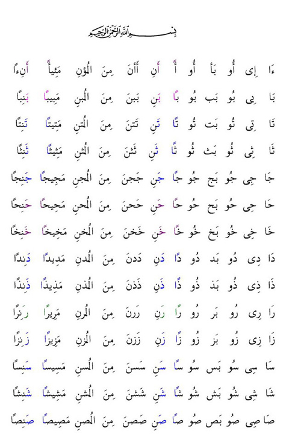
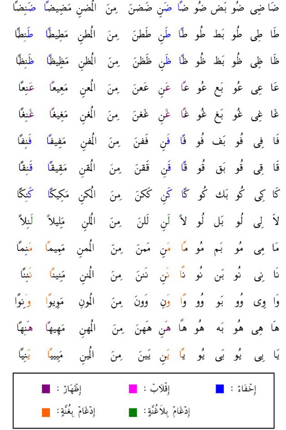

1. Pembagian Makharijul Huruf
Makharijul huruf dibagi menjadi 5 tempat, yaitu :
1. Al-Jauf (rongga mulut)
Huruf: ا و ي
2. Halaq (tenggorokan)
a Asyqal Halqi (pangkal tenggorokan), yaitu hamzah (أ) dan ha (ه)
b. Wasthul Halqi (pertengahan tenggorokan), yaitu ha (ح) dan ?ain (ع)
c. Adnal Halqi (ujung tenggorokan), yaitu ghoin (غ) dan kho (خ)
3. Lisan (lidah)
Bunyi huruf hiijaiyah dengan tempat keluarnya lidah ada 18. Dikelompokkan menjadi 10 makhraj, yaitu :
a. Pangkal lidah dan langit-langit mulut bagian belakang, yaitu huruf qof (ق).
b. Pangkal lidah bagian tengah dan langit-langit mulut bagian tengah, yaitu huruf kaf (ك).
c. Tengah-tengah lidah, yaitu huruf jim (ج), syin (ش) dan ya (ي).
d. Pangkal tepi lidah, yaitu huruf dlo (ض).
e. Ujung tepi lidah, yaitu huruf lam (ل).
f. Ujung lidah, yaitu huruf nun (ن).
g.Ujung lidah tepat, yaitu huruf ro (ر).
h. Kulit gusi atas, yaitu juruf da (د), ta (ت), tho (ط).
i. Runcing lidah, yaitu huruf sho (ص), sin (س), za ز).
j. Gusi, yaitu huruf zho (ظ), tsa (ث), dza (ذ).
4. Asy-Syafatain (dua bibir)
Huruf: fa (ف), ba (ب), mim (م).
5. Al-Khaisyum (pangkal hidung)
Huruf:
a. Nun (ن) bertasydid
b. Mim (م) bertasydid
c. Nun (ن) sukun yang dibaca idghom bighunnah, iqlab, dan ikhfa haqiqi
d. Mim (م) sukun yang bertemu dengan mim (م) dan ba (ب).
2. Sifat Huruf
Huruf Yang Berlawanan
1. جَهْرٌ (JAHAR) = Jelas,
2. هَمْسُ (HAMAS) = Samar
3. شِدَّةٌ (SIDDAH) = Kuat
4. رَخَاوَةٌ (RAKHAWAH) = Lunak
5. اِسْتِعْلاَءٌ (ISTI’LA’)= Terangkat
6. اِسْتِفَالٌ (ISTIFAL) = turun
7. اِطْبَاقٌ (ITHBAQ) = Tertutup
8. اِنْفِتَاحٌ(INFITAH) = Terbuka
9. اِصْمَاتٌ (ISHMAT) = Diam
10 اِذْلاَقٌ (IDZLAQ) = Lancar
Huruf Yang Tidak Berlawanan
1. تَوَسُّطٌ (TAWASSUTH) = Pertengahan antara Syiddah dan Rakhawah.
2. لَيِّنٌ (LAYYIN) = Lunak
3. اِنْحِرَافٌ (INHIRAF) = Condong.
4. تَكْرِيْرٌ (TAKRIR) = Mengulang-ulang.
5. صَفِيْرٌ (SHAFIR) = Siul/Seruit.
6. تَفَشِّيْ (TAFASY-SYI) = Menyebar.
7. قَلْقَلَةٌ (QALQALAH) = Goncang.
8. اِسْتِطَالَةٌ (ISTITHALAH) = Memanjang.
9. غُنَّةٌ (GHUNNAH) = Berdengung.
3. Cara Pengucapan

ا : tenggorokan yang terjauh.
ب : merapatkan kedua bibir, dipantulkan.
ت : menyentuhkan ujung lidah dengan gusi-gusi gigi seri bagian atas, ada nafas yang mengalir.
ث : menyentuhkan ujung lidah dengan dinding-dinding gigi seri bagian atas, suara dan nafas yang terdengar mengalir.
ج : menyentuhkan tengah-tengah lidah dengan langit-langit, dipantulkan, tidak boleh mengalir nafas.
ح : tengah-tengah tenggorokan.
خ : pangkal tenggorokan, mengalir nafas, seperti mengorok, menebal.
د : ujung lidah dengan gusi-gusi dua gigi seri bagian atas,dipantulkan.
ذ : ujung lidah dengan dinding dua gigi seri bagian atas (seperti ث), suara dialirkan dengan lembut, terdengar tipis dari huruf ظ
ر : menyentuhkan punggung lidah dengan langit-langit, tidak monyong ketika berharkat fathah.
ز : ujung lidah berada diantara dua gigi seri bagian atas dan bawah (seperti huruf Z), suara mengalir, nafas tidak mengalir.
س : ujung lidah diantara dua gigi seri (seperti ث), menyerupai suara belalang (?ssssa?).
ش : mengangkat tengah lidah ke langit-langit, menyebar angin di dalam mulut.
ص : lidah berada diantara dua gigi seri (seperti ش dan ز), menyerupai suara angsa, bibir tidak monyong ketika berharkat fathah (membuka rongga mulut).
ض : menyentuhkan sisi lidah dengan geraham atas, boleh salah satu sisi atau dua sisi lidah pada dua geraham, suara memanjang dan lembut.
ط : menyentuhkan ujung lidah dengan gusi-gusi dua gigi seri bagian atas.
ظ : menyentuhkan ujung lidah dengan dua gigi seri bagian atas (seperti ذ), posisi lidah berada di atas.
ع : tengah-tengah tenggorokan (seperti ح), tidak diucapkan dengan suara memasukki hidung, jika sukun suara tidak boleh mati tetapi agak ditekan sedikit.
غ : dari pangkal tenggorokan (seperti خ), tidak mengalir nafas, menebal, ketika berharkat fathah bibir tidak dimonyongkan, suara lembut.
ف : menyentuhkan dua gigi seri bagian atas dengan bibir bawah bagian dalam (seperti huruf F), suara dan angin keluar dengan lembut.
ق : menyentuhkan pangkal lidah dengan langit-langit bagian atas, suara menebal, dipantulkan.
ك : mengangkat pangkal lidah di depan huruf ق, mengalir nafas.
ل : mengangkat ujung lidah disentuhkan dengan langit-langit di depan huruf ر
م : merapatkan dua bibir
ن : menyentuhkan ujung lidah diantara posisi ر dan ل.
و : memonyongkan dua bibir.
ه : tenggorokan yang terjauh (seperti ا), tidak diucapkan dari dada.
ي : dikeluarkan dari tengah lidah ke langit-langit.

